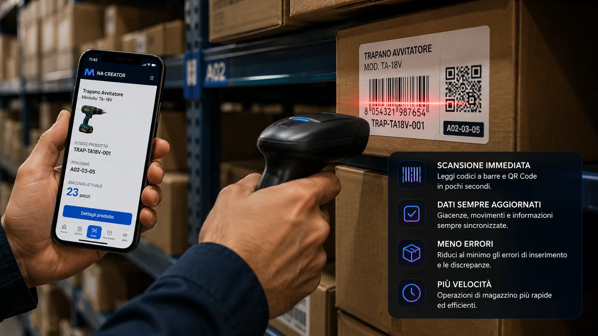
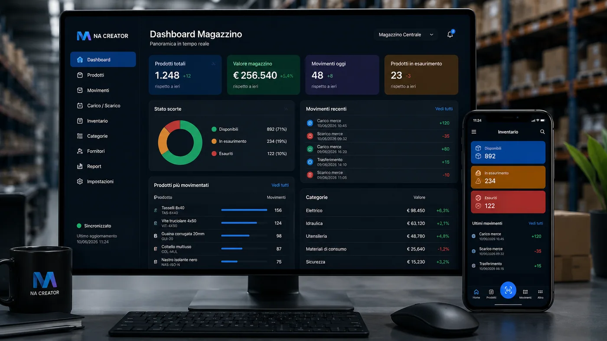
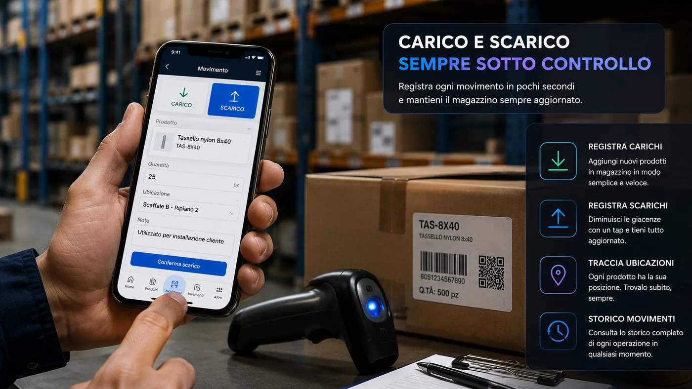
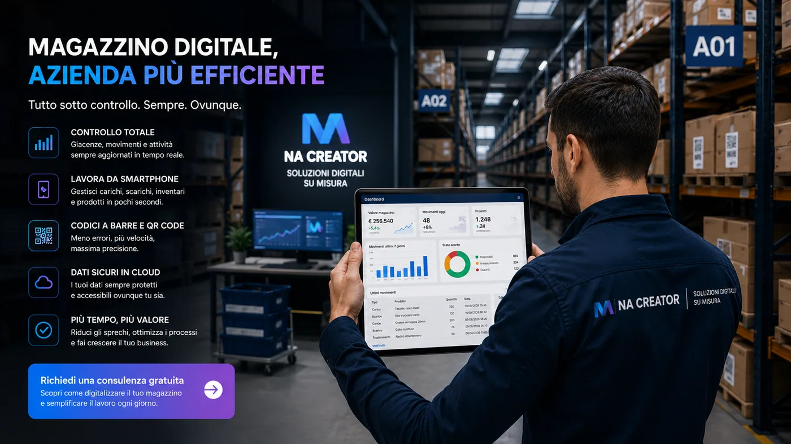

Molte aziende gestiscono ancora il magazzino con fogli Excel, carta o memoria degli operatori. Quando il numero dei prodotti cresce, aumentano giacenze errate, inventari lunghi e tempo perso.
I limiti del magazzino tradizionale
Un prodotto può essere prelevato senza registrazione, inserito nella posizione sbagliata o annotato con una quantità non corretta. Le differenze tra magazzino reale e registrato generano ritardi e acquisti inutili.

Codici a barre e QR Code
Ogni prodotto può essere identificato in modo univoco con lo smartphone.
- Identificare il prodotto
- Verificare la disponibilità
- Registrare un movimento
- Consultare schede tecniche
- Aggiornare il magazzino in tempo reale

Inventario sempre aggiornato
Ogni movimento viene registrato e rende disponibili giacenze reali, materiali in esaurimento, articoli più utilizzati e storico.
Carico e scarico merci con lo smartphone
All'arrivo della merce si scansiona il codice, si inserisce la quantità e il sistema aggiorna le giacenze. Anche il prelievo viene registrato direttamente dal telefono.


Conclusione
Grazie a smartphone, QR Code e applicazioni gestionali personalizzate il magazzino diventa un sistema semplice, veloce e sempre aggiornato.
Meno fogli, più dati corretti, più controllo
Movimenti tracciati
Carichi e prelievi restano collegati a operatori e date.
Giacenze aggiornate
La situazione è vicina alla realtà operativa.
Ricerca rapida
Codici e schede prodotto riducono il tempo perso.
Domande frequenti sul magazzino con smartphone
Come gestire il magazzino con uno smartphone?
Una web app consente di identificare gli articoli con barcode o QR Code, registrare carichi e scarichi, controllare le giacenze e consultare lo storico direttamente dal browser del telefono.
Serve un lettore barcode dedicato?
Non sempre. Per molte attività la fotocamera dello smartphone è sufficiente. Nei magazzini con grandi volumi si possono integrare anche lettori professionali Bluetooth o terminali industriali.
Il sistema può segnalare i prodotti sotto scorta?
Sì. È possibile definire una soglia minima per ogni articolo e mostrare avvisi o notifiche quando la disponibilità scende sotto il livello stabilito.
Vuoi digitalizzare la gestione del tuo magazzino?
Realizziamo applicazioni personalizzate per materiali, attrezzature, codici a barre e movimenti aziendali.
Richiedi una consulenza gratuita